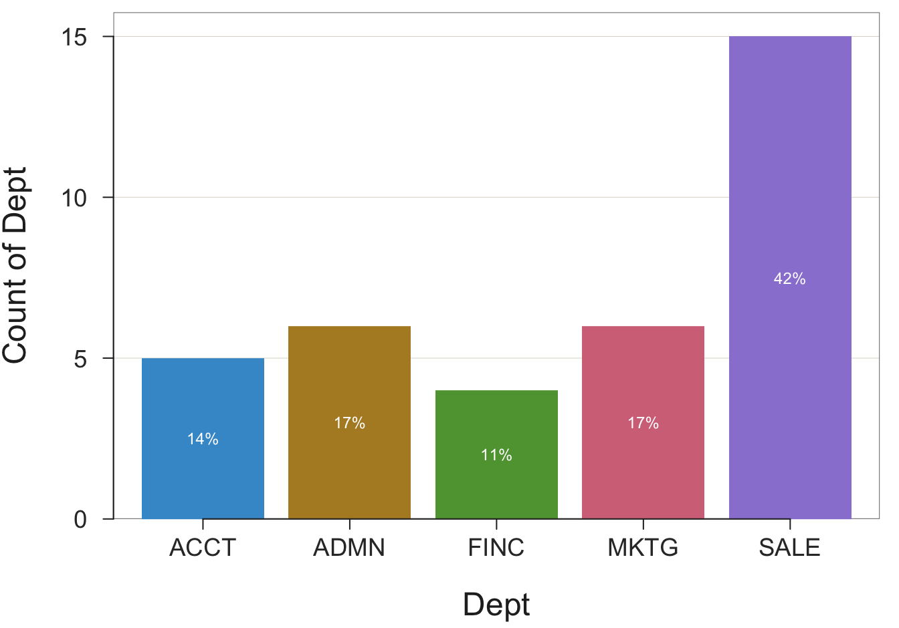

Chart(Dept)

The most fundamental analysis of data is counting the occurrence of each data value, or group of similar data values. First read the data into R, then run the functions that count the number of times different data values occurred.
All data analysis in R follows from the names of the relevant variables as stored within the relevant data table. In the function call for a data analysis, include the variable name, such as Salary, a continuous variable, or Gender, a categorical variable. The lessR Read() function lists the variable names as part of its output. Each analysis is of one or more variables, not the entire data table. Distinguish between the name of the data table, and the name of the variable(s) that exist within the data table.
Effectively communicate the results with data visualizations. The type of visualization for counting data values, as with most analyses, depends on the type of variable, categorical or continuous.
One of the most encountered data visualizations is the bar chart or its pie chart alternative. Create a bar chart or pie chart from the categories (levels) of a categorical variable with a number associated with each category. A bar chart and pie chart visualize this simple summary table.
First, the bar chart.
A bar chart requires two variables to plot, the categorical variable of interest and the values of the corresponding numerical variable. The number associated with each level (category) could be any number. Construct the bar chart from the values of the two variables expressed as a table with two columns. One column contains the name of each category of the categorical variable. In the second column of this simple table is the number associated with each category.
An example is the summary table that shows the number of employees in each department. This summary table is called a pivot table in Excel language.
Dept n
ACCT 5
ADMN 6
FINC 4
MKTG 6
SALE 15From this table, construct the bars on the bar chart. The height of each bar is proportional to the number associated with the corresponding level.
The list of categories, or levels, is provided by the chosen categorical variable from which to construct the chart. What is the source of the numbers in the table, a numerical variable, that is associated with each category? There are three possibilities.
The lessR chart function, Chart(), provides both the bar chart by default and the summary table from which the bar chart is constructed. The function applies to each of the three logical possibilities for obtaining the summary table from which the bar chart is constructed.
One possibility creates the bar chart from the original data table. Data analysis ultimately begins with the data values obtained for each unit in the analysis, such as each person or each company. To plot a bar chart, first read the data table from a computer file into the R data frame named d.
An example of raw data is the data table of employees with variables such as Salary and Gender in Figure 2.1. The data values for each employee are the original data values from which the analysis begins. To begin the analysis, read these data values into an R data frame, usually named \(d\). Then the bar chart function implicitly computes the summary table of counts.
The frequency distribution serves as the summary table from the bar chart of counts is constructed.
Consider a data frame of the raw data that contains a categorical variable, here with the generic name \(x\). For a specific analysis, \(x\) takes on a specific name, such as Gender or Dept.
Enter the function call to create a bar chart directly into the R console. The instruction in Figure 3.1 creates the bar chart of the count of each category for a categorical variable named \(x\), and the table of counts (frequencies).

A call to a function to create a bar chart necessarily contains the name of the variable with values that are the categories to plot. The names of other variables are not required when counting the values of a single categorical variable. For example, for categorical variable Gender, count the values of Woman, Man, and Other.
With the Chart() function, the name of the categorical variable is the first value passed to the function, and often, as in this example, the only value passed to the function. If the data frame is named d, then you do not need to specify the data parameter.
To illustrate, return to the data in Figure 2.1. First, read the data into R as the d data frame. Given the data, tabulate and display the number of employees in each department, according to the variable named Dept. The values of Dept are in the default data frame (table) named d. The result is the bar chart in Figure 3.2 for the distribution of the values of the categorical variable Dept.
Video: Chart of Counts, an interactive bar chart, pie chart, and more [3:11]
Example 3.1
Chart(Dept)Obtain the same analysis by explicitly including the data parameter to identify the name of the data frame, here the default value d.
Chart(Dept, data=d)Again, if the data frame that contains the variable of interest is named d, the data parameter need not be specified. If the data frame name is something other than d, then include the parameter to identify the data table that contains the variable of interest. When doing R analyses you can have as many data tables as your computer memory will allow.
The Chart() function provides a default color theme, which also labels each bar with the associated percentage of values for the corresponding category.
Another way to construct the corresponding bar chart uses the lessR interactive analysis, called by entering interact("Chart") into the R console. Then you can create a bar chart and explore different forms of the bar chart simply by clicking with your mouse.
Video: Create a bar chart interactively [before 4:04 does interactive bar charts on your computer, after 4:04 does bar charts with a cloud account.]
If you do interactive plots in a cloud account and if you save the interactive plot (instead of taking a screen shot), RStudio will save the plot in your cloud home directory (folder). Navigate to this directory by clicking on the Cloud icon in the Files tab in the bottom-right window pane, then click in the corresponding folder that contains the pdf file, as shown in the second half of the video linked above.
The Chart() function provides the tabular form of the frequency distribution, an example of a pivot table, as part of its text output to the R console. The output from the previous examples is shown below. The counts appear in the row labeled Frequencies, with the categories in the previous row.
[1] ACCT ADMN FINC MKTG SALE Total
[2] Frequencies: 5 6 4 6 15 36
[3] Proportions: 0.139 0.167 0.111 0.167 0.417 1.000From the frequency distribution that pairs a number with each category or level of the variable of interest, Chart() visualizes that pairing with the bar chart. In this example, the frequency distribution reveals that there are five accountants (ACCT), six administrators (ADMN), four financial analysts (FINC), six marketers (MKTG), and 15 people working in sales (SALE). From this information, a bar chart function defines the bars and their associated heights.
A bar chart visualizes the number associated with each category. In the previous example, the data entered into the analysis consisted of the raw data, the original data values collected for each person represented in the data table. The Chart() function then automatically proceeded to tabulate how many times each level of the categorical variable occurred in the data. From this tabulation it constructed the summary table of two columns, pairing each level of the categorical variable with its corresponding computed frequency of occurrence, the count.
In general, construct a bar chart from any table that lists the pairing of each category with some number, which is then translated into the height of the bar for that category. The summary table need not be a frequency distribution, a count of how many times each value occurred. Indeed, the table of categories and corresponding numbers could be completely nonsensical. To apply in the real world, of course, the table usually provides meaningful information, even if not counts. One example is the height of the starting center for each team in a basketball league. The table would be a list of all the teams in the league, each team paired with a number such as 83, for 83 inches tall.
Continuing the previous example of employment in various company departments, suppose the summary table of the counts is already available, but not the raw data, the original data table. Maybe you found a company report that listed the count of employees in each department, and from that table, wish to create the corresponding bar chart.
If available from another source, enter the summary table directly into a worksheet app such as Excel. In the following example, locate the already constructed summary table as an Excel file on the web. Then, read the summary table into R for analysis, the values that Chart() implicitly computed in the previous example.
d <- Read("http://web.pdx.edu/~gerbing/data/DeptCount.xlsx")After reading the summary data into the R data frame d, display the contents of the resulting small data frame (table).
d Dept n
1 ACCT 5
2 ADMN 6
3 FINC 4
4 MKTG 6
5 SALE 15This summary (pivot) table contains the two variables relevant to the analysis, categorical variable Dept, and numerical variable n. The summary table contains only one row for each value (category) of Dept. The values of the numerical variable specify the scaled height of the bar for the corresponding category.
The analysis of this summary table is the analysis of two variables. To create the bar chart from the summary table, specify the categorical variable as before, and then additionally specify the numerical variable that maps to each bar’s height. For a categorical variable named \(x\), and a numerical variable named \(y\), following is the general form of the call to Chart() in Figure 3.3 that reads data from a summary table.

For this example, the categorical \(x\) variable is named Dept, and the numerical \(y\) variable is named n. Both variables are in the d data frame, so no need to specify data=d in the call to Chart() because the name d is assumed unless otherwise specified.
When the data are a summary table, Chart() reads the values of the \(y\) variable, here n, directly instead of computing its values.
Example 3.2
Chart(Dept, n)This R instruction, a function call, creates the identical bar chart shown in Figure 3.2. Here, instead of constructing the bar chart from the original measurements and let Chart() implicitly calculate the summary table of departments and counts, Chart() directly accesses the already computed summary table. Include the numerical variable as the second parameter value in the call to Chart(), which indicates to read data from a two column summary (pivot) table.
There is more to know. If you would like to learn more about bar charts, I wrote a fun article for medium.com (Gerbing 2019). The link provides free access. For a more comprehensive understanding of data visualization, see my May 2020 book on the topic (Gerbing 2020).
For example, the above discussion indicated three ways the summary table is obtained upon which the bar chart is constructed: compute the count of each category from the original data table, provide the summary table directly, and compute a statistic for a numerical variable for each category. The previous illustrations were limited to the first two methods as applied to the counts. An example of the third method is the bar chart of the mean salary for each department computed from the original data. To obtain this bar chart, specify the categorical variable, \(x\), the numerical variable, \(y\), and then specify the statistic to compute with the parameter stat, such as stat="mean".
The Chart() function provides multiple alternatives to the bar chart. Data visualized as a bar chart for a single variable can also be represented with a "pie" chart, a "radar" chart, a "bubble" chart, a "treemap", and an "icicle" chart. Specify the type of chart with the parameter type, where "bar" is the default choice. Here, we consider the most common alternative to the bar chart, the pie chart.
As with the bar chart, obtain the pie chart of the frequencies of a categorical variable, generically named \(x\). Of course, replace the generic name with the actual variable name for any one analysis. After reading the data, create the ring chart version of the pie chart in Figure 3.5 by default.

Figure 3.5 displays the pie chart in the form of a doughnut or ring chart.
Example 3.3
Chart(Dept, type="pie")--- Dept ---
ACCT ADMN FINC MKTG SALE Total
Frequencies: 5 6 4 6 15 36
Proportions: 0.139 0.167 0.111 0.167 0.417 1.000
Chi-squared test of null hypothesis of equal probabilities
Chisq = 10.944, df = 4, p-value = 0.027 
The doughnut or ring chart is a reasonable alternative to the standard bar chart. The lessR function Chart() also can create the “old-fashioned” pie chart, such as Figure 3.6. We have seen the summary statistics several times now, so turn off the output to the R console here with the quiet parameter. Set the hole size in the doughnut or ring chart with the parameter hole, which specifies the proportion of the pie occupied by the hole.
Example 3.4
Chart(Dept, hole=0, type="pie", quiet=TRUE)--- Dept ---
ACCT ADMN FINC MKTG SALE Total
Frequencies: 5 6 4 6 15 36
Proportions: 0.139 0.167 0.111 0.167 0.417 1.000
Chi-squared test of null hypothesis of equal probabilities
Chisq = 10.944, df = 4, p-value = 0.027 
The default hole size is 0.65. Set that value to 0 to close the hole.
For a continuous variable, one possibility plots the counts with a histogram. Unlike a categorical variable, a continuous variable presents many different, numeric values. The underlying continuity requires a different approach than for the bar chart, the binning of the data. The resulting visualization of how the values of a continuous variable are distributed is a histogram.
The lessR function for potting the distribution of a single continuous variable along the \(x\)-axis is X(). One possibility creates the histogram and associated statistics from a continuous variable using lessR by entering interact("X") into the R console. Or, directly call the lessR function X(). In this example, create the histogram for the generic variable \(x\).

As an example, consider the variable Salary in the d data frame, read from the data table illustrated in Figure 2.1. Find the histogram in Figure 3.8.
Video: Histogram [3:36]
Example 3.5
X(Salary)We get not only the histogram, but the corresponding frequency distribution from which the histogram is constructed, as well as summary statistics and an outlier analysis. The frequency distribution shows the sequence of bins and how many values are located within each bin.
Choosing the best size for the bins is not a task that a computer algorithm can solve. Usually better to experiment with different bin sizes. For an undersmoothed histogram, bin width is too small. For an oversmoothed histogram, bin width is too large.
To control the width of the bins, use the bin_width parameter as part of the call to the X() function. To adjust bin width interactively, enter interact("Histogram") and click on the Bins section. Here explicitly set the bin width to 13,000 USD for the histogram of Salary instead of relying upon the default bin width provided by R. The resulting histogram in Figure 3.9 is smoother than the original in Figure 3.8. Also, in this example, turn off the console output with the quiet parameter.
Example 3.6
X(Salary, bin_width=13000, quiet=TRUE)
There are many different parameters for most functions, discussed in the next section.
A variety of conditions control the output of each analysis, text or visualization. A bar chart or a histogram, for example, requires colors for the bars, colors for the bar edges, labels for the axes, and many other characteristics. In terms of text output, for example, the maximum width of each line must be pre-set before analysis begins.
Characteristics such as bar color and maximum line width are not hard-coded into the function but instead can be customized. This logic applies to any analysis system, such as Excel or R.
Each function includes parameters to customize input or output. For any bar chart or histogram function from any analysis system, such as Excel or R, one parameter sets the color of the bars, and another parameter sets the color of the bar edges.
To use a function and have to manually select all the parameter values manually would be much too tedious.
Each function consists of several or even many different parameter values set at default values. For example, the Chart() and X() parameter fill sets the color that fills the bars. By default, Chart() displays each bar in a different color, but the bars can also be set at the same color. To change the color of all the bars to a blue shade, in Figure 3.10 set the fill parameter to "steelblue", one of many R defined colors.1 Again, set the parameter quiet to TRUE to suppress the statistical output.
Example 3.7
Chart(Dept, fill="steelblue", quiet=TRUE)Explore these parameter values and their effect on the resulting visualization interactively with the lessR function interact(). To use, provide the name of the visualization contained in quotes, such as interact("Chart") or interact("Histogram").
Video: Examine the code created for Chart() from the interactive session. [3:26]
Parameter values can be numeric or a character string such as a word or a letter. As is true of all computer analysis systems such as Excel and R, if a parameter value is a character string, enclose its value in quotes. For example, "steelblue". Specify numbers without quotes, such as 1300 in the previous example of setting the bin width of a histogram.
Also, as is true of Excel and other analysis systems such as R, the general format for setting a parameter value within the call to a function follows in Figure 3.11. The three dots, ..., in the figure indicate other stuff that is part of the function call, such as a variable name.

In the Chart() example above, fill names the parameter. The value of "steelblue" is the specific value set for that parameter. Explicitly setting that parameter value overrides the default value of Chart(), which provides a different color for each bar.
Parameters control many aspects of the way that a function processes data, far more aspects than just color. You can rely upon the default parameter values, or add more paired parameter names and values as there are parameters to add. Customize the resulting bar chart, or rely upon the default values that lessR provides without customizing anything. Every R function has a help file that reveals the parameters associated with that function. To see all the possibilities of applying the function, display the help file for the function. To view its contents, enter a question mark, ?, followed by the function name.
As another example, there is a data parameter for lessR analysis functions such as Chart() that specifies the name of the data table that contains the variable(s) to analyze. These functions default to the data table name d, so no need to specify the parameter if referring to the default name.
?ChartToward the beginning of the help file, find a list of all the parameters, their default values, and an explanation of each.
To use R to do a data analysis requires at least three separate R functions. Run R either on your computer or in the cloud.
lessR functions from your R library library("lessR")d <- Read("") to browse for the file,d <- Read("path name" or "web address") to specify the location of the filelessR function calls that count the data values that have occurred for variable x: X(x) for a continuous variable, or Chart(x) for a categorical variable.The above steps can also be done interactively using the lessR function interact(). Specifically, to interactively create a bar chart, enter at the command line:
interact("Chart")To interactively create a histogram, enter at the command line:
interact("X")Beyond lessR, find many, many analysis functions in base R as originally downloaded. Find even more functions in contributed packages such as lessR.
View all R color names and colors with the lessR function showColors().↩︎